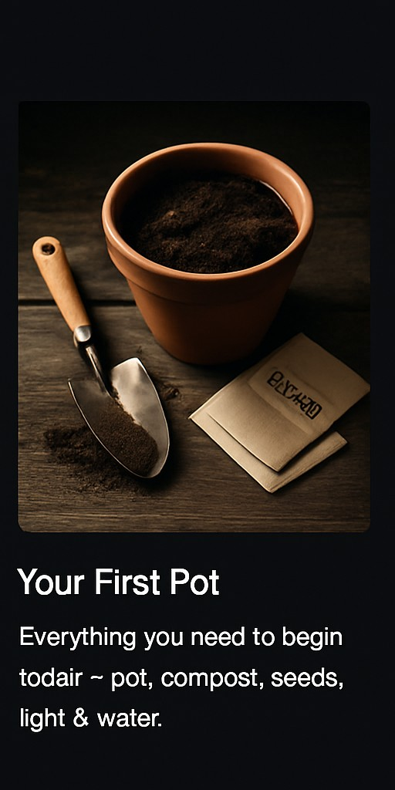

Guides
Step-by-step support to get you started with growing, sowing, and mindfulness.

Your First Pot
Everything you need to begin today ~ pot, compost, seeds, light & water.

What to Sow & When
A UK-friendly month-by-month plan for herbs, salads, and easy veg.

2-Minute Calm
A short prompt to slow breathing and settle your mind while you tend plants.